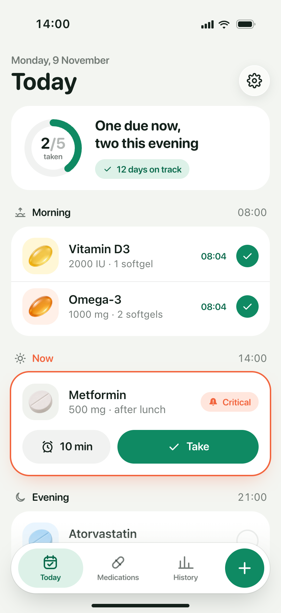
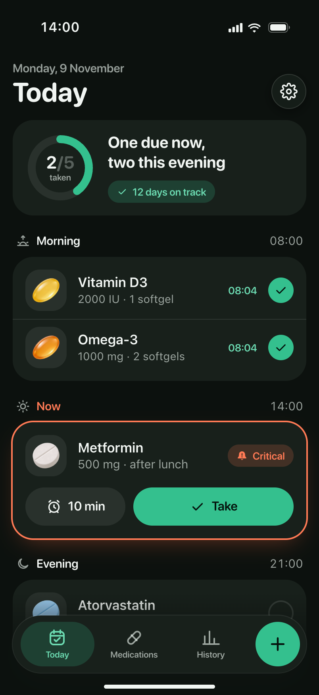
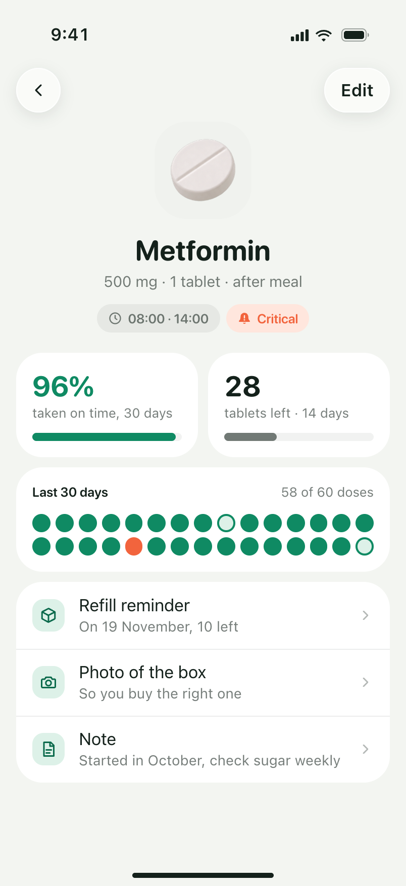
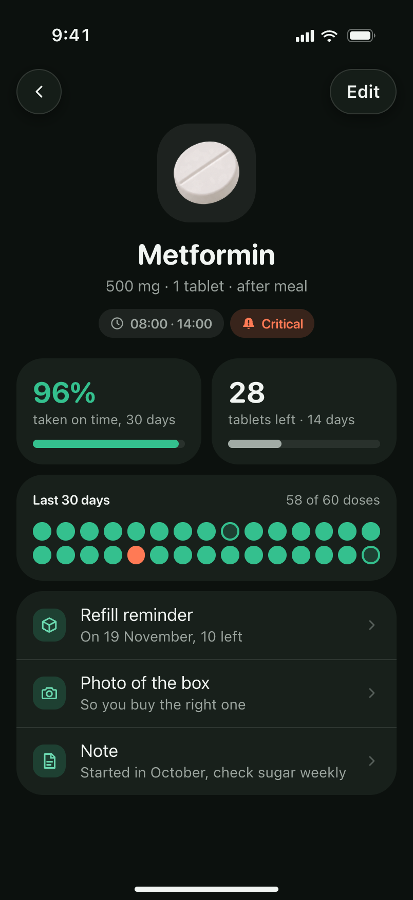
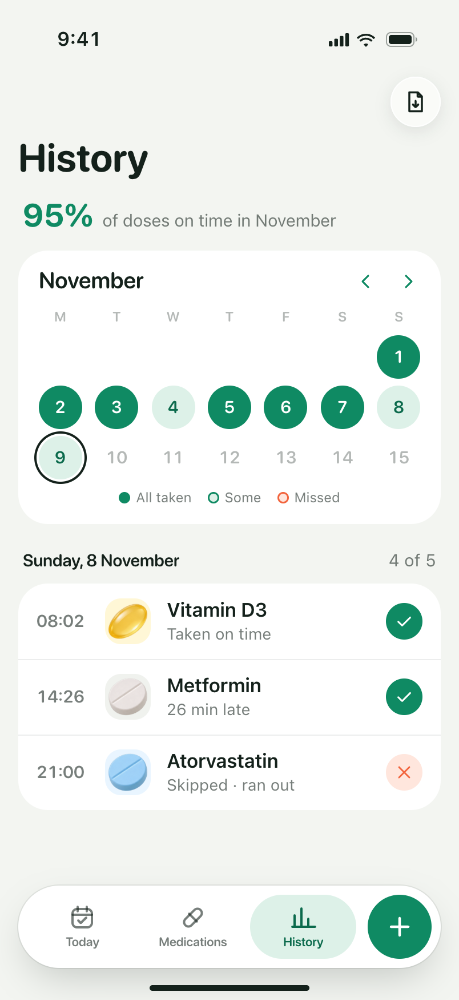
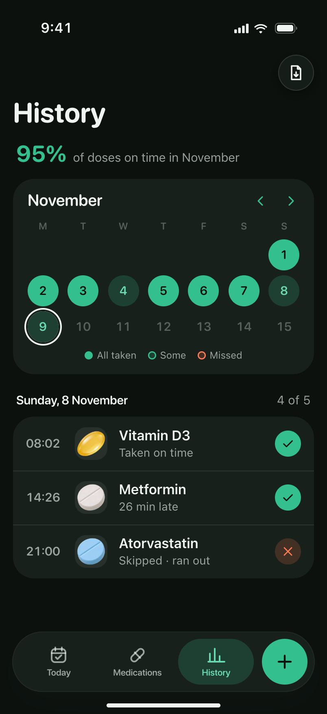

How do you want to read the case?
SmartPill is a medication reminder I built for myself first, with one engineer. Critical alerts ring through silent mode and a dose is marked from the lock screen; adding a medication takes two short steps; Today groups doses by time of day and History shows the month. It reached around 1,000 users and earned back most of the roughly $700 we put in. When Apple added medication reminders to Health I stopped the project, and that was a mistake: dedicated apps in this space are still doing well.
Walkthrough
From the first screen to the first dose taken
- Onboarding
- Critical alerts
- Today
- History
One afternoon with the app: set up, add the first medication, get a reminder that rings through silent mode, mark the dose from the lock screen.
01 · What it was
A reminder people actually kept
- Built for myself
- Product + design
- Tracking plan
- ~1,000 users
I built SmartPill for myself first: a reminder that gets through and a record of what I took. I owned the product, the design and the tracking plan in Amplitude: every event, where it fires and what it should tell us. One engineer built it. It reached around 1,000 users and earned back most of the roughly $700 we put in.
02 · Reminders
A reminder that rings through silent mode
- Critical alerts
- Lock screen
- One tap
A missed reminder is a missed dose, and a regular notification stays quiet when the phone is on silent or in Focus. SmartPill uses critical alerts, which ring the way an alarm clock does. Onboarding asks for this one permission and says why; you choose which doses get it, so vitamins can stay quiet.
The alert says what to take, how much and when, and the dose can be marked as taken right from the lock screen. Today is already up to date when you open the app.
03 · Adding a medication
Two short steps: what, then when
- Form and colour
- Schedule
- Course
First what: a name, a strength, a form and a colour, so the pill on screen looks like the one in your hand. Then when: every day, some days or every few hours, each time with its dose, before or after food, how long the course lasts and whether the reminder is critical.
Save, and the medication is on Today with its next dose.
04 · Today and history
The day by morning, afternoon and evening
- Due now
- Per-medication record
- Month at a glance
Today groups doses by time of day. The dose that is due now stands out with two actions: take it, or snooze for ten minutes. Everything else is one tap to mark.
Each medication keeps its own record: how often it was taken on time, how many pills are left, a photo of the box so you buy the right one, and a note. History shows the month: green when every dose was taken, light when some were missed, and the day as a list.


Today

Medication

History05 · Look and Plus
Friendly, not clinical
- 3D characters
- Plus in onboarding
- No countdowns
Users liked the 3D characters, so they stayed: on the welcome screen, next to the first alert and on the paywall. The pills are drawn in the same style, so the colour and shape you pick look like the real thing.
Plus appears once, in onboarding, right after the alerts: three free days, then a yearly or a monthly price. It unlocks unlimited medications, your own photos and colours, and flexible schedules. No timers and no fake discounts.
06 · Honest part
The decision I regret
- Apple Health
- Stopped too early
Things were going well until Apple added medication reminders to Health. I decided we couldn't compete with Apple and stopped. That was a mistake: dedicated apps in this space are still doing well, and Apple's feature never replaced them. Now when a big player enters my space, I look at what users actually do before deciding.
Scale
SmartPill, screen by screen
- 17 screens
- Light and dark
- Open full size
The whole story in light, from the welcome screen to history, and the main screens in dark. Open any of them full size.